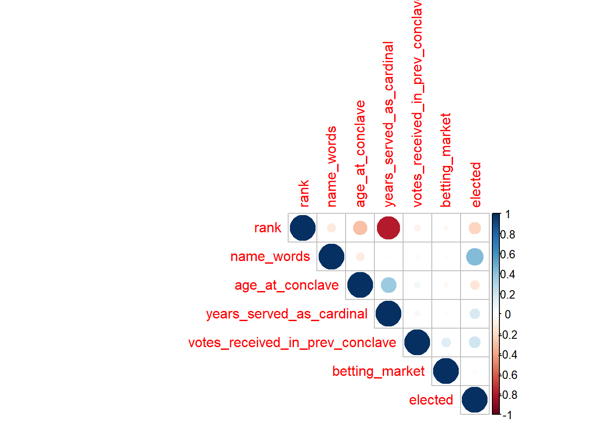
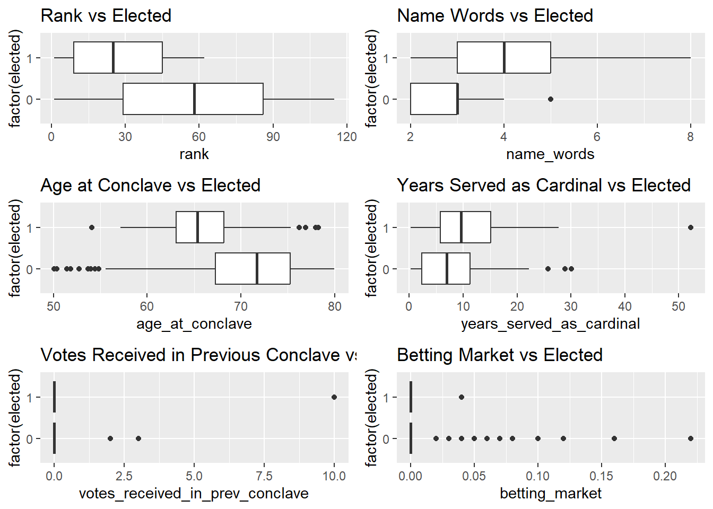
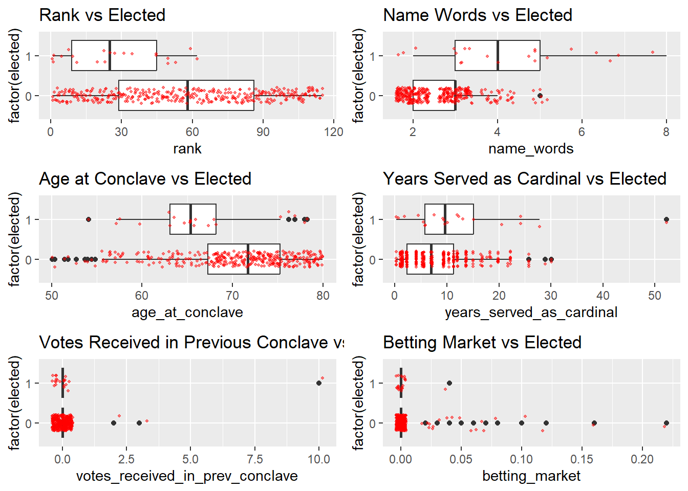
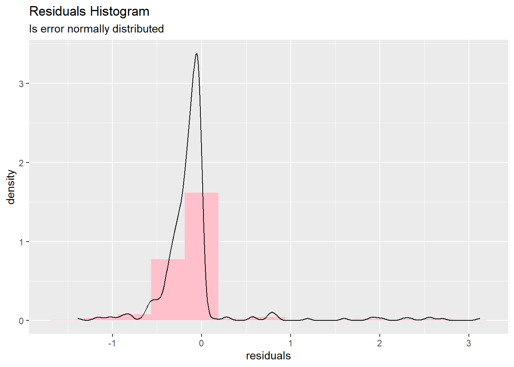

── Attaching core tidyverse packages ──────────────────────── tidyverse 2.0.0 ──
✔ dplyr 1.1.4 ✔ readr 2.1.5
✔ forcats 1.0.0 ✔ stringr 1.5.1
✔ ggplot2 3.5.1 ✔ tibble 3.2.1
✔ lubridate 1.9.3 ✔ tidyr 1.3.1
✔ purrr 1.0.2
── Conflicts ────────────────────────────────────────── tidyverse_conflicts() ──
✖ dplyr::filter() masks stats::filter()
✖ dplyr::lag() masks stats::lag()
ℹ Use the conflicted package (<http://conflicted.r-lib.org/>) to force all conflicts to become errors
library(GGally)
Warning: package 'GGally' was built under R version 4.4.3
Registered S3 method overwritten by 'GGally':
method from
+.gg ggplot2
library(lubridate)library(car)
Loading required package: carData
Attaching package: 'car'
The following object is masked from 'package:dplyr':
recode
The following object is masked from 'package:purrr':
some
library(corrplot) # for the correlation matrix
corrplot 0.95 loaded
library(bestglm) # for variable selection
Warning: package 'bestglm' was built under R version 4.4.3
Loading required package: leaps
Warning: package 'leaps' was built under R version 4.4.3
library(pROC) # for the ROC curve
Warning: package 'pROC' was built under R version 4.4.3
Type 'citation("pROC")' for a citation.
Attaching package: 'pROC'
The following objects are masked from 'package:stats':
cov, smooth, var
library(ROCR) # for the color-coded ROC curve
Warning: package 'ROCR' was built under R version 4.4.3
library(gridExtra)
Warning: package 'gridExtra' was built under R version 4.4.3
Attaching package: 'gridExtra'
The following object is masked from 'package:dplyr':
combine
library(ggfortify)library(glmnet)
Warning: package 'glmnet' was built under R version 4.4.3
Loading required package: Matrix
Attaching package: 'Matrix'
The following objects are masked from 'package:tidyr':
expand, pack, unpack
Loaded glmnet 4.1-8
set.seed(219)
Read in the data
hist <-read.csv("who will be pope - historical dataset to feed to R.csv")curr <-read.csv("who will be pope - current election to feed to R.csv")
See what formats they are
# view(hist)# view(curr)summary(hist)
conclave_date pope_name rank name
Length:360 Length:360 Min. : 1.00 Length:360
Class :character Class :character 1st Qu.: 27.00 Class :character
Mode :character Mode :character Median : 55.00 Mode :character
Mean : 56.00
3rd Qu.: 84.25
Max. :115.00
name_words country_serving born age_at_conclave
Min. :2.000 Length:360 Length:360 Min. :50.08
1st Qu.:2.000 Class :character Class :character 1st Qu.:66.28
Median :3.000 Mode :character Mode :character Median :71.33
Mean :2.733 Mean :70.19
3rd Qu.:3.000 3rd Qu.:75.26
Max. :8.000 Max. :79.99
years_served_as_cardinal cardinal_type date_created
Min. : 0.2628 Length:360 Length:360
1st Qu.: 2.3546 Class :character Class :character
Median : 7.1102 Mode :character Mode :character
Mean : 8.5060
3rd Qu.:12.0192
Max. :52.2628
creator_pope position votes_received_in_prev_conclave
Length:360 Length:360 Min. : 0.00000
Class :character Class :character 1st Qu.: 0.00000
Mode :character Mode :character Median : 0.00000
Mean : 0.04167
3rd Qu.: 0.00000
Max. :10.00000
newsweek_choice betting_market first_language elected
Min. :0.000000 Min. :0.000000 Length:360 Length:360
1st Qu.:0.000000 1st Qu.:0.000000 Class :character Class :character
Median :0.000000 Median :0.000000 Mode :character Mode :character
Mean :0.005556 Mean :0.003556
3rd Qu.:0.000000 3rd Qu.:0.000000
Max. :1.000000 Max. :0.220000
numeric_hist <- hist[, sapply(hist, is.numeric)]cor_matrix <-cor(na.omit(numeric_hist))corrplot(cor_matrix, method ="circle", type ="upper")

p1 <-ggplot(numeric_hist, aes(factor(elected), rank)) +geom_boxplot() +labs(title ="Rank vs Elected")+coord_flip()p2 <-ggplot(numeric_hist, aes(factor(elected), name_words)) +geom_boxplot() +labs(title ="Name Words vs Elected")+coord_flip()p3 <-ggplot(numeric_hist, aes(factor(elected), age_at_conclave)) +geom_boxplot() +labs(title ="Age at Conclave vs Elected")+coord_flip()p4 <-ggplot(numeric_hist, aes(factor(elected), years_served_as_cardinal)) +geom_boxplot() +labs(title ="Years Served as Cardinal vs Elected")+coord_flip()p5 <-ggplot(numeric_hist, aes(factor(elected), votes_received_in_prev_conclave)) +geom_boxplot() +labs(title ="Votes Received in Previous Conclave vs Elected")+coord_flip()p6 <-ggplot(numeric_hist, aes(factor(elected), betting_market)) +geom_boxplot() +labs(title ="Betting Market vs Elected")+coord_flip()grid.arrange(p1, p2, p3, p4, p5,p6, ncol =2)

p1 <-ggplot(numeric_hist, aes(x =factor(elected), y = rank)) +geom_boxplot() +geom_jitter(color ="red", width =0.2, alpha =0.5, size =0.8) +labs(title ="Rank vs Elected") +coord_flip()p2 <-ggplot(numeric_hist, aes(x =factor(elected), y = name_words)) +geom_boxplot() +geom_jitter(color ="red", width =0.2, alpha =0.5, size =0.8) +labs(title ="Name Words vs Elected") +coord_flip()p3 <-ggplot(numeric_hist, aes(x =factor(elected), y = age_at_conclave)) +geom_boxplot() +geom_jitter(color ="red", width =0.2, alpha =0.5, size =0.8) +labs(title ="Age at Conclave vs Elected") +coord_flip()p4 <-ggplot(numeric_hist, aes(x =factor(elected), y = years_served_as_cardinal)) +geom_boxplot() +geom_jitter(color ="red", width =0.2, alpha =0.5, size =0.8) +labs(title ="Years Served as Cardinal vs Elected") +coord_flip()p5 <-ggplot(numeric_hist, aes(x =factor(elected), y = votes_received_in_prev_conclave)) +geom_boxplot() +geom_jitter(color ="red", width =0.2, alpha =0.5, size =0.8) +labs(title ="Votes Received in Previous Conclave vs Elected") +coord_flip()p6 <-ggplot(numeric_hist, aes(x =factor(elected), y = betting_market)) +geom_boxplot() +geom_jitter(color ="red", width =0.2, alpha =0.5, size =0.8) +labs(title ="Betting Market vs Elected") +coord_flip()grid.arrange(p1, p2, p3, p4, p5,p6, ncol =2)

x <-as.matrix(hist[, c("rank", "name_words", "country_serving", "age_at_conclave", "years_served_as_cardinal", "cardinal_type", "votes_received_in_prev_conclave", "newsweek_choice", "betting_market", "first_language")])y <- hist$electedlasso_cv <-cv.glmnet(x, y, family ="binomial", alpha =1)
Warning in storage.mode(xd) <- "double": NAs introduced by coercion
Warning in storage.mode(xd) <- "double": NAs introduced by coercion
Warning in storage.mode(xd) <- "double": NAs introduced by coercion
Warning in storage.mode(xd) <- "double": NAs introduced by coercion
Warning in storage.mode(xd) <- "double": NAs introduced by coercion
Warning in storage.mode(xd) <- "double": NAs introduced by coercion
Warning in storage.mode(xd) <- "double": NAs introduced by coercion
Warning in storage.mode(xd) <- "double": NAs introduced by coercion
Warning in storage.mode(xd) <- "double": NAs introduced by coercion
Warning in storage.mode(xd) <- "double": NAs introduced by coercion
Warning in storage.mode(xd) <- "double": NAs introduced by coercion
Warning in cbind2(1, newx) %*% nbeta: NAs introduced by coercion
Warning in cbind2(1, newx) %*% nbeta: NAs introduced by coercion
Warning in cbind2(1, newx) %*% nbeta: NAs introduced by coercion
Warning in cbind2(1, newx) %*% nbeta: NAs introduced by coercion
Warning in cbind2(1, newx) %*% nbeta: NAs introduced by coercion
Warning in cbind2(1, newx) %*% nbeta: NAs introduced by coercion
Warning in cbind2(1, newx) %*% nbeta: NAs introduced by coercion
Warning in cbind2(1, newx) %*% nbeta: NAs introduced by coercion
Warning in cbind2(1, newx) %*% nbeta: NAs introduced by coercion
Warning in cbind2(1, newx) %*% nbeta: NAs introduced by coercion
lasso_lambda_min <- lasso_cv$lambda.minlasso_coef <-coef(lasso_cv, s ="lambda.min")ridge_cv <-cv.glmnet(x, y, family ="binomial", alpha =0)
Warning in storage.mode(xd) <- "double": NAs introduced by coercion
Warning in storage.mode(xd) <- "double": NAs introduced by coercion
Warning in storage.mode(xd) <- "double": NAs introduced by coercion
Warning in storage.mode(xd) <- "double": NAs introduced by coercion
Warning in storage.mode(xd) <- "double": NAs introduced by coercion
Warning in storage.mode(xd) <- "double": NAs introduced by coercion
Warning in storage.mode(xd) <- "double": NAs introduced by coercion
Warning in storage.mode(xd) <- "double": NAs introduced by coercion
Warning in storage.mode(xd) <- "double": NAs introduced by coercion
Warning in storage.mode(xd) <- "double": NAs introduced by coercion
Warning in storage.mode(xd) <- "double": NAs introduced by coercion
Warning in cbind2(1, newx) %*% nbeta: NAs introduced by coercion
Warning in cbind2(1, newx) %*% nbeta: NAs introduced by coercion
Warning in cbind2(1, newx) %*% nbeta: NAs introduced by coercion
Warning in cbind2(1, newx) %*% nbeta: NAs introduced by coercion
Warning in cbind2(1, newx) %*% nbeta: NAs introduced by coercion
Warning in cbind2(1, newx) %*% nbeta: NAs introduced by coercion
Warning in cbind2(1, newx) %*% nbeta: NAs introduced by coercion
Warning in cbind2(1, newx) %*% nbeta: NAs introduced by coercion
Warning in cbind2(1, newx) %*% nbeta: NAs introduced by coercion
Warning in cbind2(1, newx) %*% nbeta: NAs introduced by coercion
Warning in simpleLoess(y, x, w, span, degree = degree, parametric = parametric,
: reciprocal condition number 2.1073e-30
Warning in simpleLoess(y, x, w, span, degree = degree, parametric = parametric,
: There are other near singularities as well. 1
Warning in predLoess(object$y, object$x, newx = if (is.null(newdata)) object$x
else if (is.data.frame(newdata))
as.matrix(model.frame(delete.response(terms(object)), : pseudoinverse used at
1.97
Warning in predLoess(object$y, object$x, newx = if (is.null(newdata)) object$x
else if (is.data.frame(newdata))
as.matrix(model.frame(delete.response(terms(object)), : neighborhood radius
1.03
Warning in predLoess(object$y, object$x, newx = if (is.null(newdata)) object$x
else if (is.data.frame(newdata))
as.matrix(model.frame(delete.response(terms(object)), : reciprocal condition
number 2.1073e-30
Warning in predLoess(object$y, object$x, newx = if (is.null(newdata)) object$x
else if (is.data.frame(newdata))
as.matrix(model.frame(delete.response(terms(object)), : There are other near
singularities as well. 1
Warning in simpleLoess(y, x, w, span, degree = degree, parametric = parametric,
: at -0.05
Warning: The dot-dot notation (`..density..`) was deprecated in ggplot2 3.4.0.
ℹ Please use `after_stat(density)` instead.

UH OH!!!
# Fit the null model (intercept only)null_model <-glm(elected ~1, data = hist, family ="binomial")# Fit your chosen modelmodel <-glm(elected ~ rank + name_words + age_at_conclave + years_served_as_cardinal + votes_received_in_prev_conclave + betting_market, data = hist, family ="binomial")# Likelihood ratio test statistic (deviance difference)lrt_stat <- null_model$deviance - model$deviance# Degrees of freedomdf <- null_model$df.residual - model$df.residual# p-valuep_value <-pchisq(lrt_stat, df = df, lower.tail =FALSE)# Outputlrt_stat
[1] 77.15258
p_value
[1] 1.382445e-14
The pvalue is so tiny that we will reject the null hypothesis. Also, the likelihood test stat is extremely high, so we can say our model does a great job, and this test is strong evidence that it predicts the pope well.
cutoff value for the model that minimizes the percent misclassified
# Predicted probabilitiesprobs <-predict(model, type ="response")# True labelstrue <- hist$elected# Try many cutoff values from 0 to 1cutoffs <-seq(0, 1, by =0.01)misclass_rates <-sapply(cutoffs, function(cut) { pred <-ifelse(probs > cut, 1, 0)mean(pred != true)})# Best cutoff = the one with lowest misclassification ratebest_cutoff <- cutoffs[which.min(misclass_rates)]# Outputbest_cutoff
[1] 0.49
confusion matrix
# Use best cutoff to get predicted classpredicted_class <-ifelse(probs > best_cutoff, 1, 0)# Create confusion matrixconf_matrix <-table(Predicted = predicted_class, Actual = true)# Outputconf_matrix
Actual
Predicted 0 1
0 338 10
1 1 11
interpretation:
True Negatives: 338
False Positives: 1
False Negatives: 10
True Positives: 11
specificity <-338/(338+1)specificity
[1] 0.9970501
Specificity is the true negative rate, so, correctly identified negatives / all negatives. Since it’s 99%, that means the model can correctly identify 99% of people who will not get elected.
sensitivity <-11/(11+10)sensitivity
[1] 0.5238095
sensitivity is the proportion of correctly identified positive cases / all positive cases. Since it’s 52%, that means we correctly Identified someone who will be elected 52% of the time.
name country_serving age_at_conclave
1 Odilo Scherer Brazil 75.6
2 Robert Francis Prevost United States 69.6
3 Louis Raphaël I Sako Iraq 76.8
4 Vinko Puljić Bosnia and Herzegovina 79.6
5 Fernando Filoni Italy 79.0
6 Péter Erdő Hungary 72.8
position predicted_prob
1 Archbishop of São Paulo 0.154801095
2 Prefect of the Dicastery for Bishops[c] 0.084974145
3 Patriarch of Baghdad\n(Chaldean Church) 0.078422655
4 Archbishop emeritus of Vrhbosna 0.013066149
5 Grand Master of the Order of the Holy Sepulchre 0.011298688
6 Archbishop of Esztergom–Budapest 0.007461788
tail(pretty_table)
name country_serving age_at_conclave
134 Pierbattista Pizzaballa Jerusalem[o] 60.0
135 Peter Turkson Ghana 76.5
136 Luis Antonio Tagle Philippines 67.8
137 Matteo Zuppi Italy 69.5
138 Pietro Parolin Italy 70.3
139 Donald Trump United States 78.9
position
134 Latin Patriarch of Jerusalem
135 Chancellor of the Pontifical Academy of Sciences and the Pontifical Academy of Social Sciences
136 Pro-Prefect of the Dicastery for Evangelization[c]
137 Archbishop of Bologna
138 Secretary of State of His Holiness[c]
139 US President
predicted_prob
134 1.539037e-09
135 6.918489e-11
136 2.032027e-11
137 4.647383e-12
138 2.220446e-16
139 NA